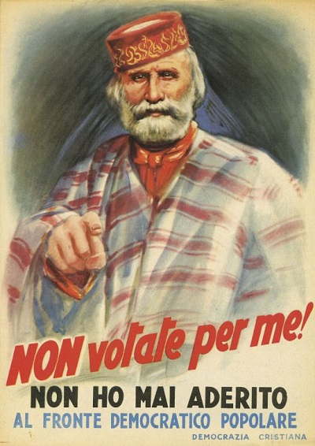
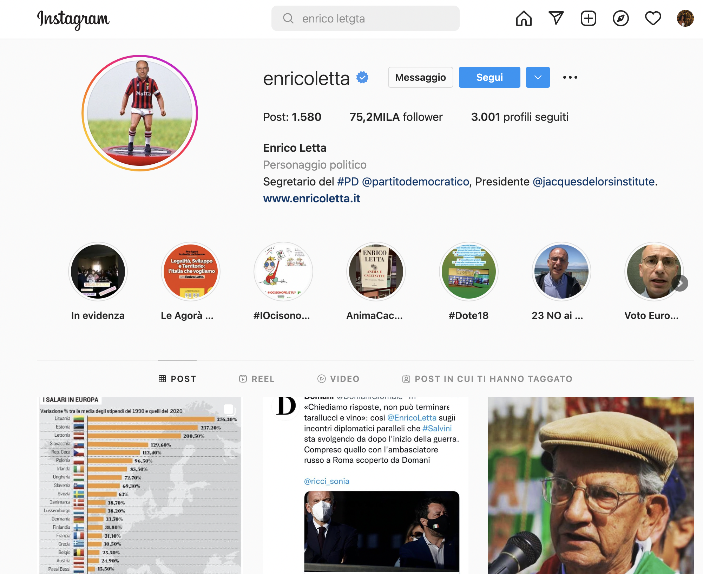

La propaganda è onnipresente, tutti usano la propaganda.
È un tipo di comunicazione che giustifica un obiettivo, aggirando
la ragione. E' un metodo per spingerti a mobilitarti
verso qualcosa nascondendoti cose che dovresti ragionevolmente pensare e considerare.
Cos'è la propaganda?
La propaganda è "l'attività di disseminazione di idee e informazioni con lo scopo di indurre a specifici atteggiamenti e azioni".
Spesso il termine può polemicamente alludere a grossolane deformazioni o falsificazioni di notizie o dati, diffuse nel tentativo di influenzare l'opinione pubblica.
Propagnda italiana nel corso degli anni
Campagna elettorale del 1948
Le elezioni del 48, rappresentano la prima partecipazione politica del popolo italiano in uno stato democratico. Per i Partiti rappresentava
la possibilità di riuscire a controllare fin dall’inizio il governo dello stato. Per questo la campagna elettorale per queste elezioni fu una
delle più feroci della storia italiana, e allo scopo di combattere l'astensinismo degli italiani e di coinvolgere le masse, le forze principali
di destra e sinistra composte dai partiti di massa presentarono le elezioni come un dovere verso la patria e la propria famiglia, una scelta di
civiltà tra il comunismo e l’anticomunismo, tra lo schieramento americano e quello sovietico. Fin dall’inizio della repubblica italiana, le forze del CLN
si divisero e si scontrarono impedendo così la formazione di una unità politica. La propaganda fu attuata con ogni tipo di mezzo: sia quelli precedenti propri
del fascino come i comizi, la radio, i cinema ecc…; ma anche volantini e manifesti il cui scopo era quello di presentare i punti a favore di un partito,
collegandolo a simboli della cultura e storia italiana, e quello di demonizzare il nemico. Per convincere l’italiano medio, con bassi livelli di istruzione e alfabetizzazione,
a votare, si usavano manifesti, cartoline e volantini con simboli e grafiche accattivanti e slogan che colpissero il lettore. Per esempio i manifesti del Fronte popolare (PCI e PSI),
usavano la figura di Garibaldi su una stella a 5 punte come simbolo dei loro valori: pace, libertà, lavoro. La democrazia cristiana utilizzò simboli cattolici e biblici, come la croce,
i serpenti per i peccati, la famiglia. Buona parte dei manifesti puntavano però sul denigrare e disumanizzare il nemico, presentato come un nemico della patria al servizio dello straniero.
L’avversario politico era oggetto di invettive e caricature dai tratti zoomorfizzanti, razziali, mostruosi. Gli stessi simboli di un partito venivano usati per denigrare il nemico.
Per combattere l'astensinismo, l’attività dei partiti si concentrò anche sull’educare il singolo individuo: i partiti di massa si diffusero capillarmente in tutto il territorio italiano:
il fronte popolare passava per le case e per le strutture pubbliche per diffondere il loro messaggio, ma anche per raccogliere proposte da parte dei cittadini al fine di farli partecipare
attivamente nella politica. Il Dc organizzò in vece i comitati civivi organizzazione finalizzata all'educazione e alla mobilitazione civico-politica dei
cattolici in Italia. in funzione anticomunista. Erano organizzati gerarchicamente come la Chiesa. Il fine di tutto ciò era quello di invitare gli italiani a votare
Manifesto del Fronte Popolare
Manifesto del Fronte Popolare
Voto cristiano (1948, manifesto a cura dei Comitati civici)
L’ultima trasformazione “Cecchino Truman” (1948, manifesto del Fronte popolare)
Tutti uniti contro i servi di Truman! (1948, manifesto del PCI)
Manifesto del Fronte Popolare
Manifesto del Fronte Popolare
Difendetemi (1948, manifesto della DC)
Vota o sarà il tuo padrone (1948, manifesto a cura dei Comitati civici)
Manifesto della Democrazia Cristiana">
Manifesto della Democrazia Cristiana
Manifesto della Democrazia Cristiana">
Manifesto della Democrazia Cristiana
Manifesto della Democrazia Cristiana
Negli anni 60, la propaganda si evolve, al fine di diffondere anche tra i soggetti meno interessati alla politica,
i valori dei partiti. Almeno a partire dalla metà degli anni Cinquanta il PCI sperimenta media popolari come
fumetti o fotoromanzi. Consapevole della grande diffusione del genere tra i propri iscritti e militanti questi
inconsueti documenti di propaganda elettorale conoscono soprattutto negli anni Sessanta una certa fortuna.
Il fotoromanzo è un tipo di racconto per immagini in cui i personaggi sono rappresentati da attori veri e
noti al grande pubblico. Il racconto è costituito da fotografie scattate su un set simile a quello cinematografico.
In Italia il fotoromanzo è stato a lungo guardato con sospetto tanto dalla sinistra quanto dal mondo cattolico,
come se si trattasse di un’intrusione americana nella cultura nazionale, non tenendo conto del fatto che le origini
del “romanzo d’amore a fotogrammi” sono in realtà italiane. Inizialmente venivano usati per raccontare storie di consumo,
leggere riguardanti temi amorosi. Erano per questo molto diffusi fra le donne poco acculturate e dei giovani,
nuovi gruppi collettivi ed emergenti nella società. Nei fotoromanzi di propaganda usati dal PCI tra gli anni
Cinquanta e Sessanta, accanto alla classica storia d’amore a lieto fine, vi erano immagini di scioperi,
storie di emigrazioni, la garanzia di un lavoro sicuro in patria, il rispetto della donna lavoratrice,
il diritto alla casa, il predominio maschile sul lavoro e in casa, le difficoltà di progettare
un futuro per le giovani coppie, la mancanza di asili nido e la tutela degli anziani:
tutte problematiche trattate dal PCI. In questa prospettiva «love story con happy and politico»,
il fotoromanzo “politico” si pone come uno specchio fedele della realtà e individua le necessità dei
lettori aiutandoli quindi a capirne la portata e la legittimità. Il lieto fine sentimentale è
la scusa formale per introdurre il vero finale: l’“invito al voto comunista” che marca
il distacco dal melodramma dei fotoromanzi classici: i protagonisti si trovavano davanti a un seggio
elettorale, a sottolineare il fatto che, per raggiungere la felicità, era necessario votare
PCI. I più importanti erano “Più forte del destino” e “La vita cambierà.”
La vita cambierà

Pagina di "La vita cambierà"

Finale di "La vita cambierà"
Cuore di Emigranti 1963

Pagina di "Cuore di Emigranti"

Finale di "Cuore di Emigranti"
Nonostante la televisione sia ad oggi ancora il principale mezzo di informazione nella dieta
mediatica degli italiani, gli ultimi 10 anni sono stati caratterizzati da una costante crescita
nell’utenza dei social media. ll cuore del dibattito politico, nel corso di un ventennio,
si è spostato dai canali televisivi alle bacheche dei social, rendendo le campagne di marketing
online uno strumento centrale per catalizzare e ampliare il consenso politico, in particolar
modo tra le fasce più giovani. Se un tempo si limitavano a intasare a casaccio le cassette
della posta o i canali televisivi, oggi se appare una pubblicità elettorale nei social o
nelle ricerche su Google c'è sempre un perché. E’ l’effetto del “targeting”, cioè dell’operazione
con cui chi ha piazzato quello spot ha stabilito i criteri per selezionare coloro verso i quali
inviarli. Si basa sull’uso di algoritmi di selezione e visibilità dei post che personalizzano
i contenuti per favorire messaggi e notizie appartenenti alla nostra ‘comfort zone’.
Dallo spot autoreferenziale dell’inserzionista Partito democratico, che per la famiglia
intenta a convincere il papà a votare Pd ha selezionato chi interagisce con le pagine e
le applicazioni presenti sul sito del partito; a quello del leader di CasaPound Simone
Di Stefano, che preferisce invece tentare coloro che hanno messo “mi piace” o hanno
interagito con le inserzioni della Lega, un elettorato che evidentemente ritiene
suggestionabile dal suo movimento di estrema destra. Giorgia Meloni che sorride nella
pubblicità “dalla parte delle forze dell’ordine e delle forze armate. Sempre”, indovinate
a chi invia lo spot? Ai maggiorenni che hanno messo “mi piace” a contenuti legati all’Arma
dei carabinieri
Grazie a questo meccanismo, la propaganda sui social e su internet diventa più efficace e funzionale, spostando così le spese e le energie delle campagne sui social.
Tra i partiti si possono distinguere due tipologie, in base a come conducono la campagna propagandistica:
Nella Lega, la spesa si concentra infatti sui profili personali di Matteo Salvini (oltre 250.000€ spesi in post sponsorizzati tra Facebook e Instagram in un solo anno), il restante si suddivide fra le pagine personali di altre figure politiche, mentre le pagine ufficiali del partito non rappresentano nemmeno l’1% della spesa totale. Anche gli altri partiti di centrodestra collocano molte delle loro risorse sui profili del leader, senza però trascurare completamente il finanziamento alle pagine ufficiali del partito.
Partito Democratico, Più Europa e Movimento 5 Stelle seguono invece la strategia opposta, concentrando le spese principalmente sulle pagine ufficiali del partito e molto meno su quelle del leader.
Grazie a questo meccanismo, la propaganda sui social e su internet diventa più efficace e funzionale, spostando così le spese e le energie delle campagne sui social.
Tra i partiti si possono distinguere due tipologie, in base a come conducono la campagna propagandistica:
- ‘personalistici’: mettono in primo piano il/la leader (come Lega e Fratelli d’Italia, partiti di centro destra)
- quelli dove le pagine ufficiali del partito sono invece il principale mezzo di propaganda (questo vale soprattutto per Movimento 5 Stelle e Partito Democratico).
- influencer: la costruzione dell’identità politica avviene attorno a quella personale, rendendo pubblici più aspetti della quotidianità del politico con un alto numero di post al giorno e commenti immediati sulle notizie dell’ultim’ora. Il politico costruisce così fiducia e seguito mentre diventa una fonte diretta di informazione. La figura dell’influencer è più evidente in quei partiti all’interno dei quali personaggi di spicco sono riusciti ad ottenere un seguito sproporzionatamente maggiore di quello dei loro compagni di partito. Questo è il caso di partiti più ‘personalistici’, come la Lega e Fratelli d’Italia ma emerge anche in figure inaspettate come Vincenzo De Luca del Partito Democratico.
- protagonismo mediatico: invece che utilizzare i social come un semplice megafono per le proprie idee, chi è riuscito a coinvolgere gli utenti in prima persona ha ottenuto un alto livello di interazione sotto i suoi post, facendo crescere la propria visibilità.
Nella Lega, la spesa si concentra infatti sui profili personali di Matteo Salvini (oltre 250.000€ spesi in post sponsorizzati tra Facebook e Instagram in un solo anno), il restante si suddivide fra le pagine personali di altre figure politiche, mentre le pagine ufficiali del partito non rappresentano nemmeno l’1% della spesa totale. Anche gli altri partiti di centrodestra collocano molte delle loro risorse sui profili del leader, senza però trascurare completamente il finanziamento alle pagine ufficiali del partito.
Partito Democratico, Più Europa e Movimento 5 Stelle seguono invece la strategia opposta, concentrando le spese principalmente sulle pagine ufficiali del partito e molto meno su quelle del leader.
Spot PD 4 Marzo 2018 "Pensaci"

Giorgia Meloni su Twitter
Lega di Salvini instagram
Matteo Salvini instagram
Fratelli di Italia instagram
Giorgia Meloni instagram
Partito democratico instagram
